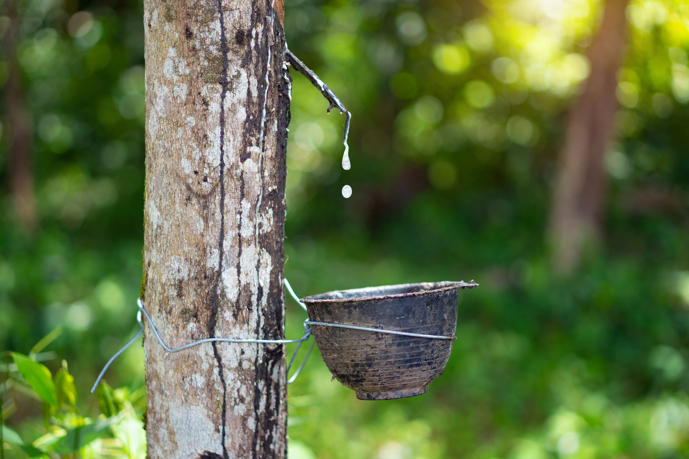
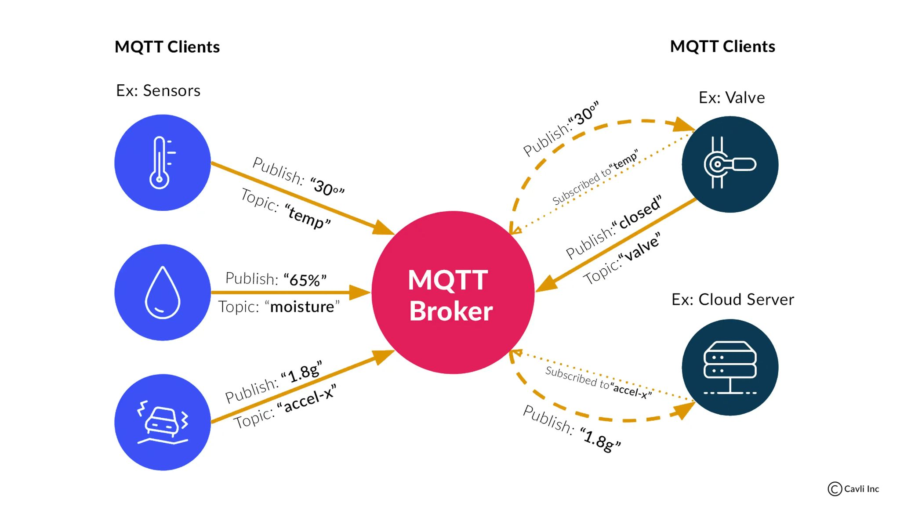
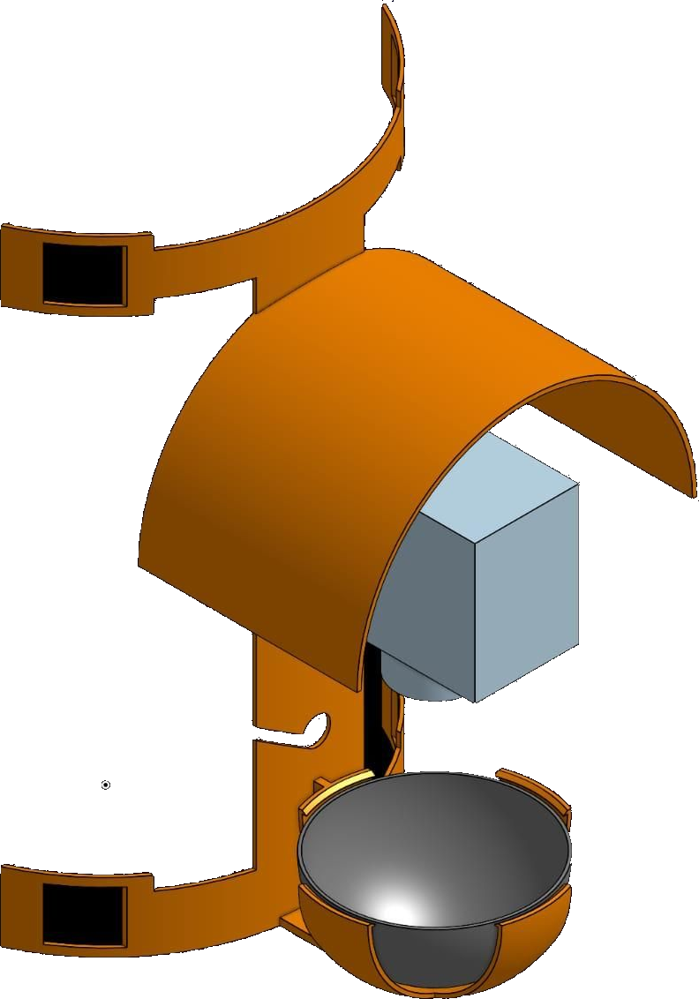
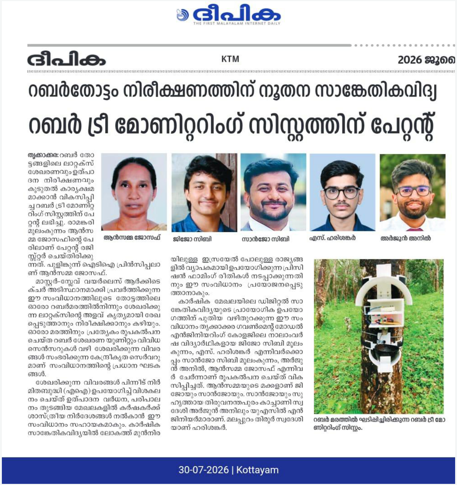

More than one field signal
Bring latex level, soil moisture, ambient temperature and humidity, NPK and weight-related measurements into one monitoring approach.
Bring your rubber plantation into focus with connected, tree-level monitoring of latex, soil and microclimate conditions.
RUBBOLAX is an IoT-enabled monitoring system designed to collect meaningful data from individual rubber trees.
By bringing together sensor nodes, a local master server and a web-based monitoring portal, RUBBOLAX helps plantation teams see changing field conditions with greater clarity.
Discover the technology →RUBBOLAX is being presented for commercial interest, buyer discussions and potential deployment partnerships.
The purpose of this website is to introduce the product to prospective buyers and organisations interested in acquiring, licensing, integrating or evaluating the system. If you represent a plantation group, agri-business or technology organisation, we invite you to start a conversation.

RUBBER PLANTATION CONTEXTExplore the physical system, its mounting arrangement and the monitoring concept through the product overview video.
Discuss a demonstration ↗RUBBOLAX combines multiple field measurements and connected data collection in one system concept. These are intended operational advantages, not quantified performance guarantees.
Bring latex level, soil moisture, ambient temperature and humidity, NPK and weight-related measurements into one monitoring approach.
Collect readings at individual trees rather than relying only on occasional visual checks across a plantation.
Wireless Wi-Fi communication links field nodes to a local server, with MQTT used in the presented architecture.
A web-based portal concept brings collected measurements together for review and comparison.
The presented hardware includes a protective enclosure, canopy, strap mounting and cup stabilisation.
The architecture includes solar PV with battery backup to support the field-node power arrangement.
RUBBOLAX brings multiple measurements together to build a more detailed picture of conditions around the tree and its latex collection point.
RUBBOLAX is organised as a connected field network: individual tree modules gather readings, a local server brings the data together, and the monitoring portal presents the information.

Sensor modules mounted at individual trees collect local field measurements.
A central unit receives and aggregates readings from the distributed modules over the plantation network.
The proposed network uses Wi-Fi connectivity and MQTT messaging to move readings between field nodes and the local server.
Collected information can be viewed through a browser-based monitoring interface.

The RUBBOLAX hardware concept brings the sensing unit, protective enclosure and latex-cup mounting arrangement together in one tree-mounted assembly.
Illustration is a cropped hardware concept from the project presentation, not a full technical drawing. Final specifications should be confirmed with the RUBBOLAX team.
The RUBBOLAX presentation includes a web-based monitoring portal concept for viewing collected plantation data. The portal can bring readings and trends into one accessible interface.
Ask about the monitoring portal →Illustrative UI only — no live RUBBOLAX data is connected.
RUBBOLAX may be relevant to organisations managing rubber trees, collecting latex, researching plantation conditions or bringing agricultural technology to market.
For owners exploring tree-level monitoring across their plantations.
For teams responsible for plantation operations, field oversight and data-informed planning.
For organisations supporting multiple growers and shared plantation services.
For research, field evaluation and agricultural technology studies.
For technology partners interested in integration, distribution or deployment.
For parties interested in commercial acquisition, licensing or a strategic partnership.
Looking to buy, license or partner?
Contact the RUBBOLAX team to discuss the product, demonstration and commercial terms.

The project presentation identifies Patent No. 568877, granted on 21 July 2025, for the Rubber Tree Monitoring System and Method Thereof.
Patent details are presented as supplied in the project pitch deck. Refer to the official patent record for legal scope and status.
Interested in buying RUBBOLAX, discussing a licence, arranging a product demonstration or exploring a strategic partnership? Send an enquiry to the team.